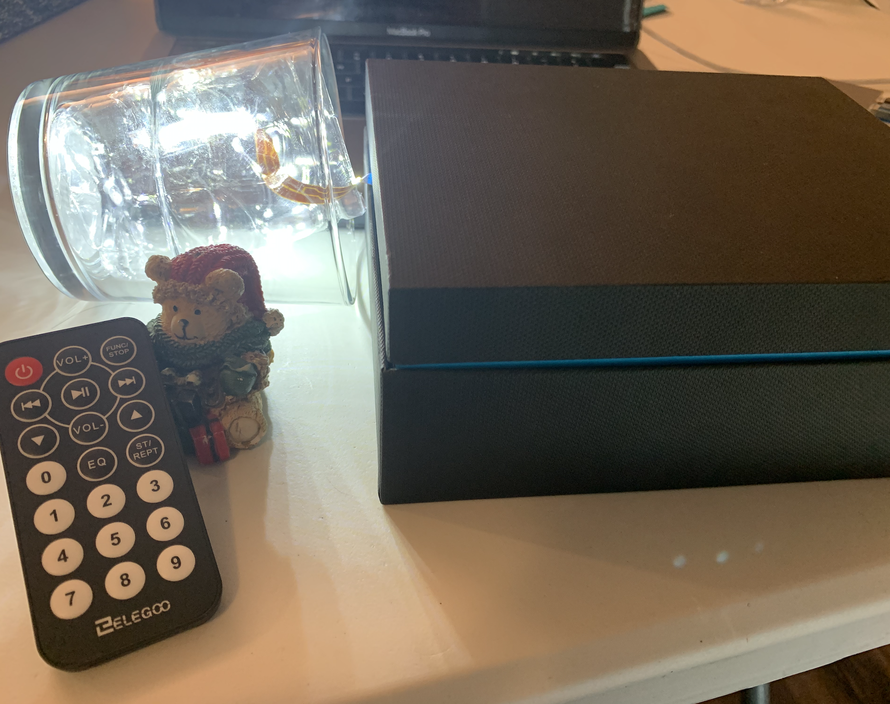
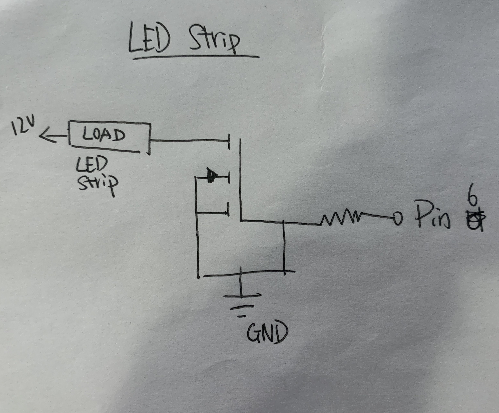
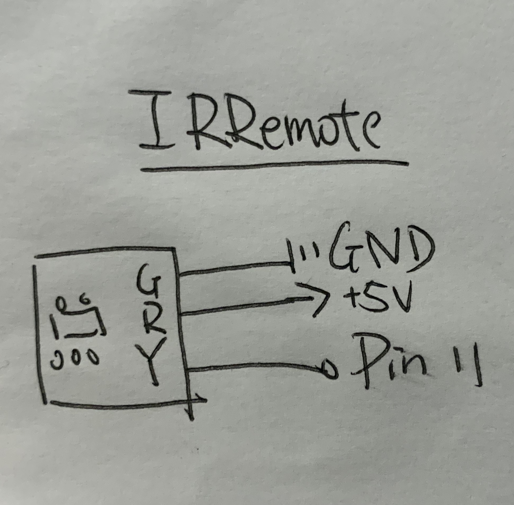

Final Project: Remote Control Table Lamp
When I am in bed, I always hate to get up to turn off the light. With this product, I can use the controller to turn on/off the light remotely. Also, I am able to control the brightness of the table lamp.
Schematic
 
1) From the microcontroller, Pin 6 connects to a leg of a 1k Ohm resistor, where the other leg is connected to the gate of the transistor by a wire. The source leg of the transistor connects back to ground. The drain leg of the transistor connects to the negative leg of the LED strip through an alligator clip. The positive leg of the LED strip is connected to power by a wire to the positive screw terminal of a 12V power cord, the negative screw terminal connects to the breadboard to circulate back to ground.
2) Connect IRRemote to Ground, 5V and Pin 11 to pass the signal.
Circuit

The maximum current that can pass from the drain to source on this N-MOSFET is 32A. In this case, there are only three segments of LED strips are connected in parallel, so the total current is 15mA(< 32A).
Firmware
Circuit's operation

The red button is used to turn on/off the lamp. The number pad is used to control the brightness of the lamp, as 1 being the lowest and 9 being the highest. Also, users need to turn on the light first before they change the brightness of the lamp.